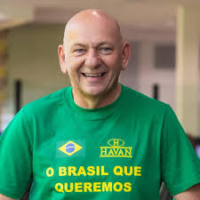

O Homem Por Trás do Sucesso
LUCIANO
HANG
De Brusque (SC) para o mundo. 15.º empresário mais rico do Brasil (Forbes 2023). Dono da Havan.
QUEM É LUCIANO HANG
Luciano Hang é um empresário brasileiro, conhecido não apenas por sua varejista Havan, mas também por seu envolvimento com política e presença na mídia.
Nascido em Brusque, Santa Catarina, em 11 de outubro de 1962, é filho de Regina e Luís Hang, operários da Fábrica de Tecidos Carlos Renaux.
Superou dislexia (diagnosticada anos depois) e formedou-se em processamento de dados pela Universidade de Blumenau.
.jpg)
.jpg)
.jpg)
FUNDAÇÃO DA HAVAN
Fundação da Havan com Vanderlei de Limas. Nome = Hang + Vanderlei. Pequena loja de tecidos em Brusque-SC.
Arquitetura inspirada na Casa Branca e Estátua da Liberdade. Pontos turísticos!
Duas tentativas de IPO interrompidas - investidores não aceitaram R$ 100bi / CVM indeferiu.
Forbes: 15.º empresário mais rico do Brasil, US$ 3.2 bilhões.
CONQUISTAS
900+ LOJAS
25 MIL COLABORADORES
US$ 3.2B
EMPRESÁRIO DO ANO 2014
PROJETOS SOCIAIS

🧢 CAPACETE AZUL
.jpg)
🎓 BOLSAS DE ESTUDO
.jpg)
🏠 DOAÇÕES
🇧🇷 POLÍTICA
Apoio aberto ao ex-presidente Jair Bolsonaro (2018-2022).
Polêmicas: Investigado em 2020 por fake news e em 2022 por Lei Rouanet - refutou.
"Não tenho intenção de me candidatar a cargo público."
🌧️ ENCHENTE RS 2024
Luciano Hang mobilizou ajuda humanitária:
- 🔥 Doação de R$ 5 milhões
- 🚚 Suprimentos para vítimas
- 🏠 50 mil cestas básicas
🏪 NOVA LOJA TAQUARA
30 de maio de 2025 - Taquara-RS